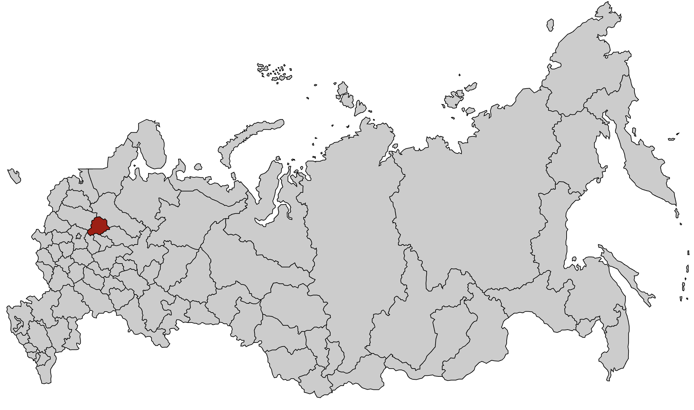
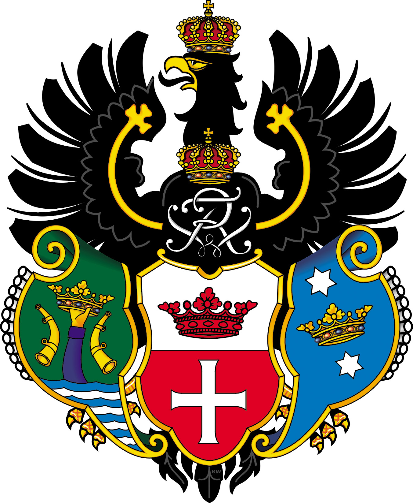

Сезон 2018 - Ярославль
Место выезда

Нашивка

Командный состав
- Командир — Баранов Марк
- Комиссар — Ткач Никита
- Мастер — Иванов Антон
Бойцы
- Блинов Михаил
- Визгирда Александра
- Волосович Юрий
- Горобий Сергей
- Горшков Алексей
- Гутовский Владислав
- Егорова Анастасия
- Ермолаев Евгений
- Журавлев Никита
- Захаров Кирилл
- Караман Антон
- Киселева Полина
- Кияницын Сергей
- Кобелев Иван
- Курдин Валерий
- Курочкин Павел
- Махин Даниил
- Николаев Виктор
- Решетников Александр
- Сергеева Маргарита
- Сончик Илья
- Тимофеев Дмитрий
- Федоров Максим
- Ченин Роман
О сезоне
Работодатель: ООО «Строймонтаж».
Объект: Стадион "Шинник".
Виды работ: лопата, укладка кирпича, покраска забора, работа на высоте, электрика.
Самый многочисленный выезд за всю историю отряда - 13 бойцов и 14 кандидатов.
Фотоальбом